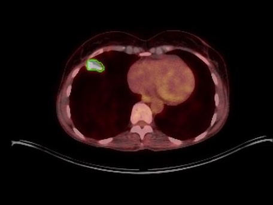
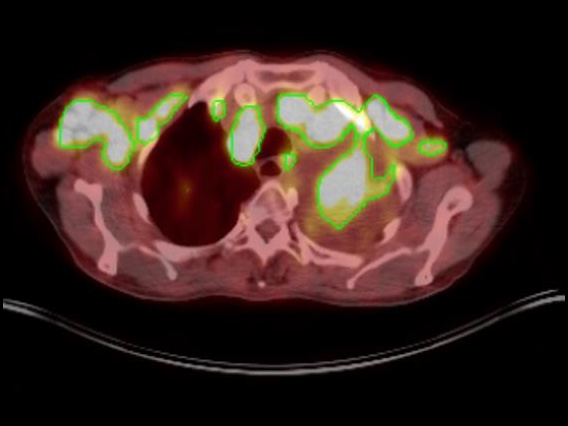
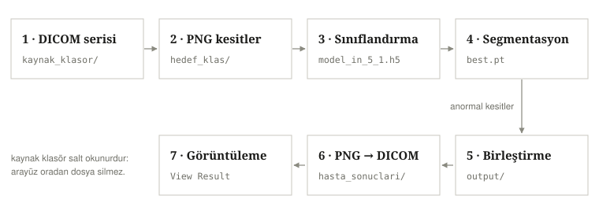
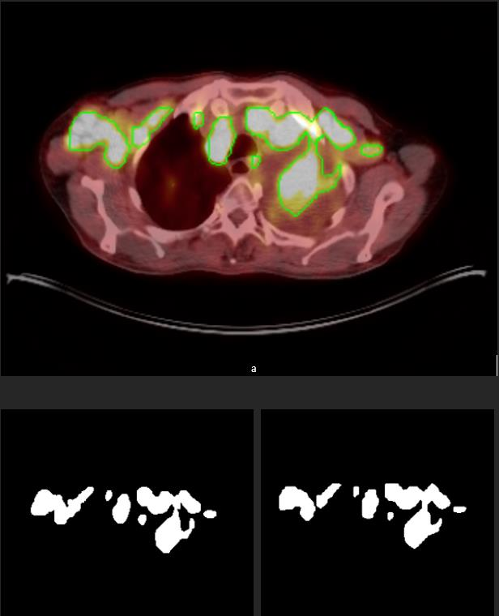
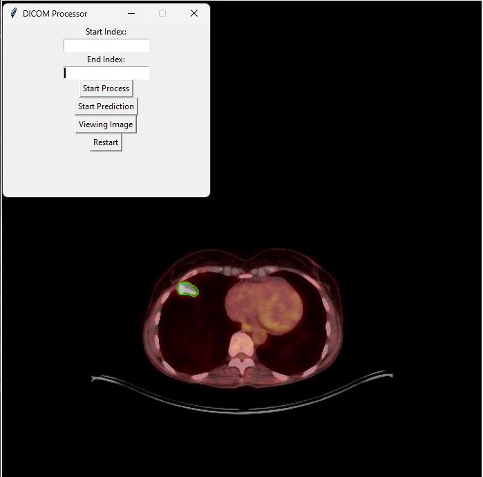

Bitirme projesi · 2024
Akciğer PET/CT kesitlerinde lezyon tespiti ve konturlama
İki aşamalı bir derin öğrenme hattı: InceptionV3 her kesiti normal/anormal diye ayırıyor, YOLOv8m-seg yalnızca anormal kesitlerde tümörün sınırını çiziyor. Sonuç, orijinal meta verileri korunarak DICOM serisine geri yazılıyor.


Modelin önerdiği tümör sınırı iki farklı kesitte. Kesitler anonimleştirilmiş hasta serilerinden alınmıştır; sınır yalnızca kontur olarak çizilir, tanısal içeriği kapatmaz.
YOLOv8m-seg, doğrulama
kesinlik 0,894 · duyarlılık 0,807
InceptionV3, 1.214 kesit
789 eğitim / 198 doğrulama
01Problem
Her kesiti tek tek okumak yerine, okunacak kesiti bulmak
Bir PET/CT serisi yüzlerce kesitten oluşuyor. Radyoloğun tüm seriyi tarayıp şüpheli bölgenin sınırını elle çizmesi hem zaman alıyor hem de gözlemciye göre değişiyor.
Bu projede amaç tanı koymak değil: kesitleri önceden eleyip yalnızca şüpheli olanların sınırını önermek. Böylece işaretleme yükü azalıyor, sınırlar aynı kuralla üretiliyor.
02Yöntem
Yedi adımlı hat, iki model
Veri hazırlığından sonuç serisine kadar her adım klasör bazlı ve tekrar üretilebilir. Kaynak DICOM klasörü salt okunur; hat oradan dosya silmiyor.
- 01Veri hazırlama
DICOM → PNG, kesitler
InstanceNumbersırasına diziliyor; QuPath poligonları COCO'dan YOLO formatına çevriliyor. - 02Sınıflandırma ImageNet ağırlıklarıyla başlatılan InceptionV3, kesiti normal ya da anormal olarak etiketliyor.
- 03Segmentasyon YOLOv8m-seg, yalnızca anormal kesitlerde çalışıp lezyon maskesini ve sınırını üretiyor.
- 04Birleştirme
İşaretli ve işaretsiz kesitler tek seride toplanıyor, yeni
SeriesInstanceUIDile DICOM'a yazılıyor.

03Sonuçlar
Doğrulama kümesinde 0,838 maske mAP@50
Eğitim 100 epoch, imgsz=640, batch=64, SGD
(lr0=0.001) ve tek sınıf (Cancer) ile yapıldı. Metrikler
Ultralytics'in COCO değerlendirmesiyle hesaplandı.
| Görev | Precision | Recall | mAP@50 | mAP@50-95 |
|---|---|---|---|---|
| Kutu (tespit) | 0,894 | 0,807 | 0,893 | 0,576 |
| Maske (segmentasyon) | 0,861 | 0,773 | 0,838 | 0,472 |

results/ klasöründedir.Nasıl okunmalı: Eğitim/doğrulama ayrımı kesit düzeyinde; aynı hastanın kesitleri iki kümede de bulunabiliyor. Bu, metrikleri iyimser kılar — yayına hazır bir değerlendirme için hasta düzeyinde bölme gerekir.
04Arayüz
Dört düğme, tek akış
Masaüstü arayüz Tkinter ile yazıldı. İndeks aralığı girilip adımlar sırayla çalıştırılıyor; sonuç serisi aynı pencerede, dahili DICOM görüntüleyicide inceleniyor.

- Start Process
- Seriyi sıraya dizer, verilen aralıktaki kesitleri PNG'ye çevirir.
- Start Prediction
- Kesitleri sınıflandırır, anormal olanları segmente eder, sonucu DICOM'a yazar.
- Viewing Image
- Sonuç serisini görüntüleyicide açar; tekerlekle dilimler arasında gezinilir.
- Restart
- Ara klasörleri temizler, başlangıç durumuna döner.
05Makale ve kod
Kaynaklar
Akciğer Kanser Tanılı Hastalarda Kanserli Doku Tespiti İçin Yapay Zeka Yöntemleri Kullanılarak Kanserli Bölgenin Konturlanması — Doç. Dr. H. Feza Carlak, İhsan Bahadır Emekli. Hakem değerlendirmesinden geçmiş bir yayın değil; bitirme projesi raporu.
06Sınırlar
Neyi bilerek yapmadım
- Bölme kesit düzeyinde; hasta düzeyinde değil. Metrikler bu yüzden iyimser.
- Tek sınıf: tüm lezyonlar
Cancer; tümör tipi ayrımı yok. - Etiketler tek radyolog tarafından çizildi; gözlemciler arası uyum ölçülmedi.
- Sınıflandırıcı ve segmentasyon modeli farklı kümelerde eğitildi; olasılık kalibrasyonu yapılmadı.
Tıbbi uyarı: Bu yazılım yalnızca akademik araştırma amaçlıdır, klinik teşhis aracı değildir. Ayrıntılar için DISCLAIMER.md.